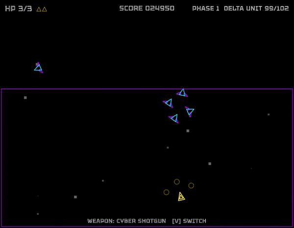

Delta Unit
The Delta Unit is the fleet you fight in Outer Space, stage 3: 102 ships in 8 waves. The Mothership, which opens the Finale, is part of the Delta Unit too, so it is described on this page.
Appearance
Delta Unit ships are small, sharp, arrow-like shapes in cyan with purple edges, drawn in the same flat line-art style as the rest of the game. The Mothership is far bigger: a wide, flat-topped hull that narrows toward the bottom, with three rectangular panels across it.
The fleet
Each wave flies in and lines up at the top of the screen. A ship that is still flying in can't be hit.
- Commando: cyan pods, then a dark-blue core.
- Shooter: stays in line and shoots down.
- Divebomber: dives at you in pairs.
Only one attack happens at a time, and an attacker keeps diving until you shoot it down. For the last 3 ships, the shooters fire faster, and they aim at you. A box keeps you below the ships. A heal orb drops after every wave but the last.

The Mothership
The Mothership is the first phase of the Finale. It parks at the top of the screen. It is cyan, so any shot hurts it, anywhere on the hull. The hull hurts to touch. HP: 200. It has 3 attacks:
- Machine Gun: 10 volleys of 3-way purple shots.
- Splash: 7 rings of purple shards. A shrinking ring shows where each one starts.
- Spears: 24 cyan spears. Shoot them down.
Tip: stay low and keep firing up.